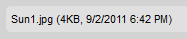
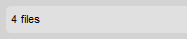
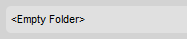

Pasek statusu (Status Bar) to obszar na dole interfejsu CKFindera przeznaczony do wyświetlania informacji dotyczących wybranego pliku, całkowitej liczby plików w folderze itd.
Po wybraniu pliku w CKFinderze w pasku statusu wyświetlone zostaną szczegółowe informacje na temat tego pliku, w tym jego nazwa, rozmiar, a także data ostatniej modyfikacji. Na przykład:

Jeśli żadne pliki nie są wybrane, w pasku statusu zostanie zamiast tego wyświetlona całkowita liczba plików znajdujących się w folderze bieżącym. Na przykład:

Jeśli folder jest pusty, w pasku statusu zostanie wyświetlony odpowiedni komunikat. Na przykład:
